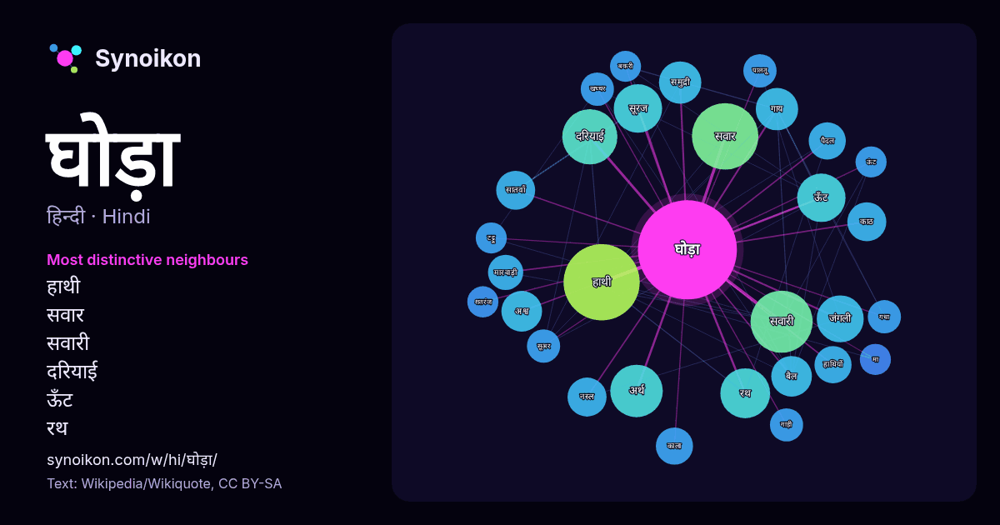

हिन्दी · आज के शब्दों की सूची
घोड़ा
“horse” · विकिपीडिया, Wikiquote के 885 प्रयोगों में इसके आसपास मिले शब्द।

सबसे विशिष्ट पड़ोसी
- हाथी 36×
- सवार 29×
- सवारी 26×
- दरियाई 23×
- ऊँट 17×
- रथ 17×
- सूरज 16×
- जंगली 14×
- अश्व 13×
- गाय 12×
- बैल 12×
- सातवाँ 12×
- काठ 12×
- नस्ल 11×
- समुद्री 11×
- हाथियों 10×
- मारवाड़ी 9.8×
- पैदल 9.6×
- काला 9.5×
- खच्चर 8.9×
× = सामान्य विकिपीडिया टेक्स्ट की तुलना में कितने गुना अधिक।
सबसे अधिक आने वाले पड़ोसी
- हाथी 42
- सवार 32
- सवारी 28
- नाम 27
- दरियाई 22
- अर्थ 20
- रथ 18
- राजा 18
- वाला 18
- ऊँट 17
- जाने 17
- सूरज 17
- जंगली 16
- अथवा 14
- जिसका 14
- आकार 13
- गाय 13
- समुद्री 13
- अश्व 12
- बैल 12
संदर्भ में
- हो, जैसे कि विलुप्तप्राय शेवालस्की का घोड़ा, जो एक अलग उपप्रजाति हैं और बचा हुआ केवल एकमात्र असली जंगली घोड़ा हैं। वह मनुष्य से जुड़ा हुआ संसार का सबसे Wikipedia snippets · घोड़ा
- दरियाई घोड़ा या जलीय घोड़ा (Hippopotamus) एक विशाल और गोलमटोल स्तनपायी प्राणी है जो अफ्रीका का मूल निवासी है। दरियाई घोड़े नाम के साथ घोड़ा शब्द जुड़ा Wikipedia snippets · दरियाई घोड़ा
- काला घोड़ा दक्षिण मुंबई का एक क्षेत्र है। काला घोड़ा कला महोत्सव Wikipedia snippets · काला घोड़ा
- सूरज का सातवाँ घोड़ा 1993 में बनी हिन्दी भाषा की फिल्म है जो धर्मवीर भारती के प्रसिद्ध उपन्यास सूरज का सातवाँ घोड़ा पर आधारित है। नीना गुप्ता - sati पल्लवी Wikipedia snippets · सूरज का सातवाँ घोड़ा (फ़िल्म)
- सूरज का सातवाँ घोड़ा धर्मवीर भारती का प्रसिद्ध उपन्यास है। धर्मवीर भारती की इस लघु औपन्यासिक रचना में हितोपदेश और पंचतंत्रवाली शैली में ७ दोपहरी में कही Wikipedia snippets · सूरज का सातवाँ घोड़ा
- घोड़ा अश्ववंश का एक स्तनपायी हैं। घोड़े का विकास 50 करोड़ वर्ष की एक भूगर्भिक समय के पैमाने में हुई। प्रजाति: ई कबालस जीनस: ऐकव्स परिवार: अश्ववंश आदेश: Wikipedia snippets · घोड़ों का उद्विकास
- ट्रोजन हॉर्स या काठ का घोड़ा एक कथा है जिसमें ग्रीक सैनिकों ने त्राय नगर में प्रवेश करने के लिये काठ के एक विशाल घोड़े का निर्माण किया (जिसके खोखले पेट Wikipedia snippets · ट्रोजन हॉर्स
- घोड़ा (♘, ♞) शतरंज के खेल का एक मोहरा है। यह दूसरे मोहरों से बहुत अलग प्रकार से चलता है। घोड़ा दो खाने एक दिशा में सीधा चलकर एक खाना 90° के कोण पर रुकता Wikipedia snippets · घोड़ा (शतरंज)
और शब्द
- इतिहास
- ईश्वर
- कार्य
- कुत्ता
- गर्मी
- गाना
- घंटी
- घड़ी
- चाय
- चित्रकला
- छाया
- जंगल
- जलवायु
- जीवन
- तूफ़ान
- दर्पण
- द्वीप
- नक्षत्र
- नमक
- परिवार
- पहाड़
- पानी
- पैसा
- प्रकृति
- बगीचा
- बिल्ली
- भाषा
- भोजन
- माता
- मानचित्र
- मृत्यु
- मौन
- रेगिस्तान
- रेलगाड़ी
- रोटी
- वर्षा
- विज्ञान
- शक्ति
- शरद
- शहद
- शहर
- सड़क
- सत्य
- समय
- सर्दी
- सेतु
- स्वर्ण
- स्वास्थ्य
- हृदय
2026-10-09 को डिफ़ॉल्ट सेटिंग्स (±5 शब्द, मध्यम कॉर्पस) के साथ पहले से गणना की गई। इंटरैक्टिव मानचित्र इसे लाइव डेटा से ताज़ा कर सकता है।
मशीन-अनूदित इंटरफ़ेस; सुधारों का स्वागत है।